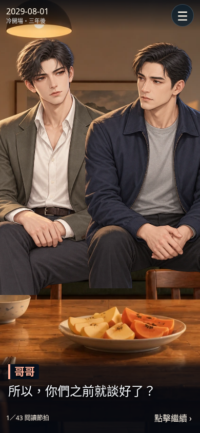
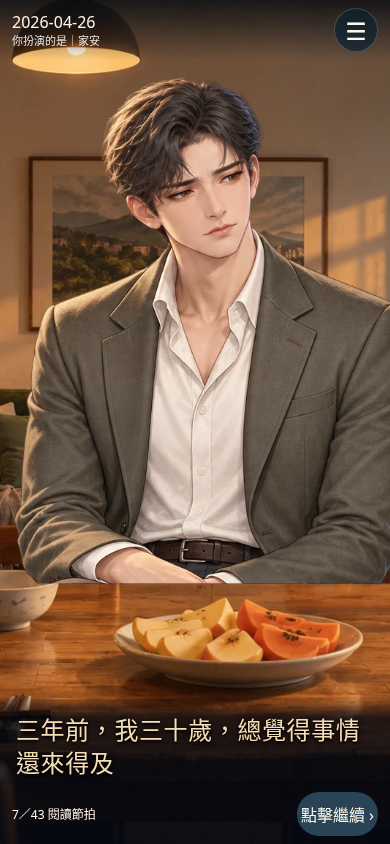
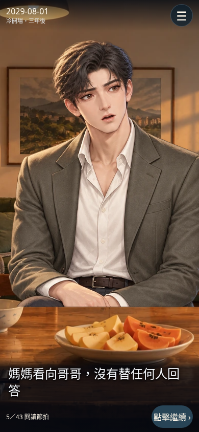
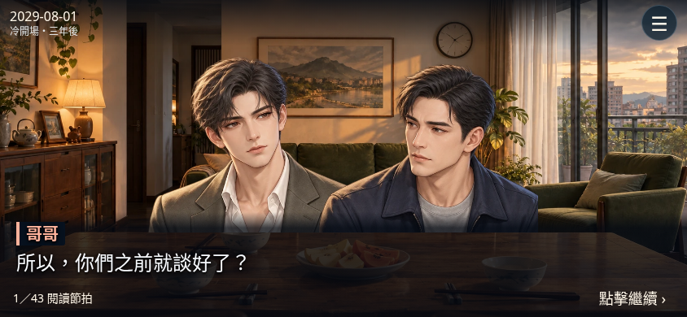
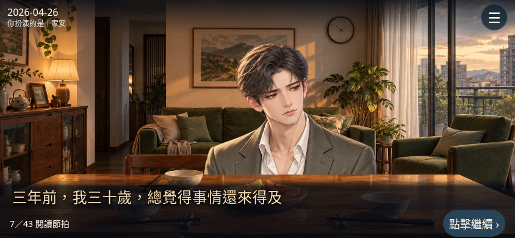
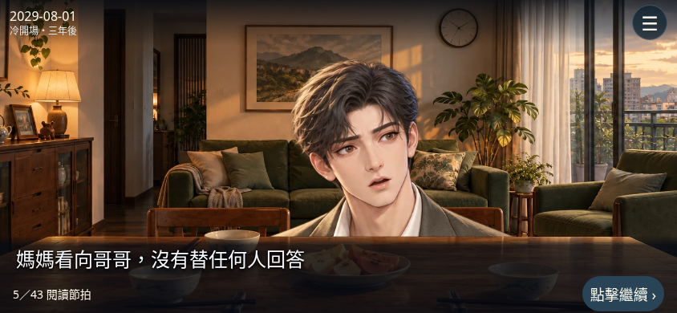
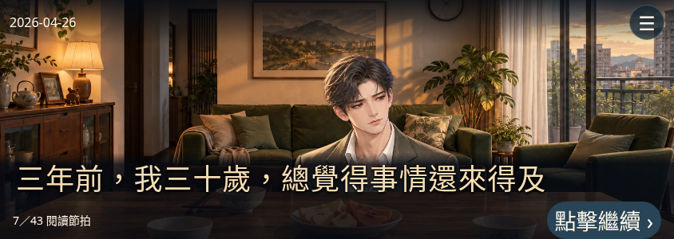

最新鏡頭修正：查看逐節拍一致性檢查與實際前後截圖。本頁保留前一輪畫面，不代表本輪鏡頭。
本輪只修正文字分類與呈現，沒有新增台詞、刪除資訊、改動選擇、人物關係、動畫素材或法律效果。78段文字逐一檢查：59段人物對話、12段主角內心獨白、7段場景敘述；另有2個選擇節點。
保留人物標籤及識別色，正文維持白色

無姓名標籤、米金色、細緻字距；正文仍為24px基準

無姓名標籤、白色普通敘事字幕，不冒充主角想法




七段改列場景敘述：媽媽看向哥哥、兩間房的日常說明、媽媽沒有拆穿留湯、A路線照片、B路線手套、B路線父親沒有再追問、C路線裝箱及提醒。即使句中含「我」，客觀動作也不直接當成內心想法。
內心獨白保留主角對人生的回望、自己工作與育兒壓力、對承諾的猶疑及自我反省；沒有把所有旁白改寫成第一人稱。省略主詞的反思，例如「後來才知道」與「上次要安排的」，依前後文仍屬主角的回想，不是第三人稱場景播報。
目前候選畫面尚未明確演出手機照片、手套、搬箱與母親細微眼神，因此本輪沒有刪除上述文字，避免丟失劇情資訊；也沒有宣稱畫面已呈現這些道具動作。

畫面來源為本輪實際Chromium操作；歷史五分鐘錄影未重製，仍是上一輪的舊字幕介面，不能作為本輪畫面驗收依據。